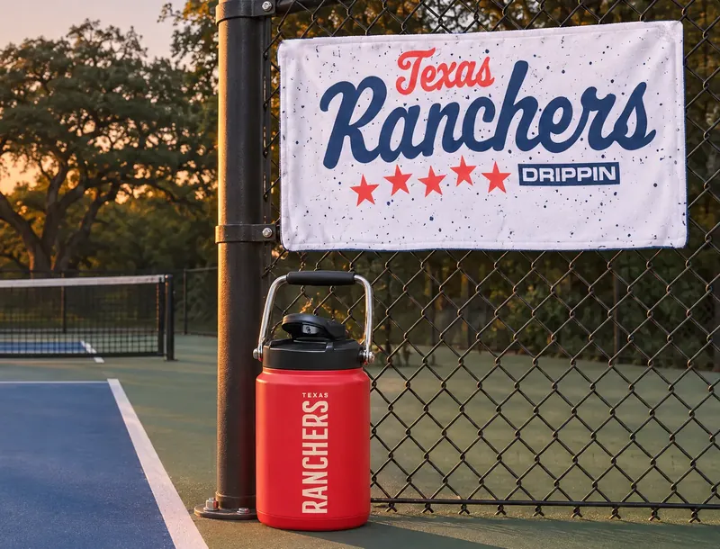
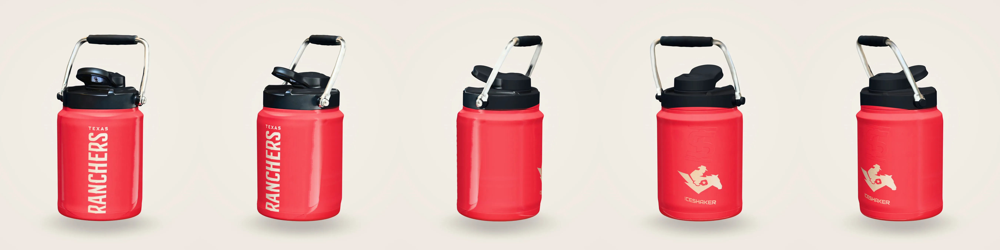
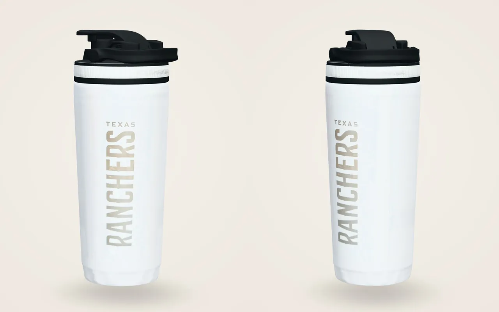

Texas Ranchers x Ice ShakerStill thinking it over?
60+ Hours cold.Texas heat.
The Texas Ranchers x Ice Shaker Half Gallon keeps it cold for 60+ hours. Red, white or navy.Meet it with the half gallon that keeps it cold for 60+ hours. Red, white or navy.
Cold for 60+ hours. Red, white or navy.
Texas Ranchers x Ice Shaker Half Gallon Jug
$75
Color Red
Free shipping through Dec 14 · US ordersFree shipping ends Dec 14 · US orders
Official merch of the Texas Ranchers, Austin's Major League Pickleball club.


Official merch of the Texas Ranchers, Austin's Major League Pickleball club.
Built for a long day on court
- Vacuum insulated: keeps drinks cold for 60+ hours
- Carry handle and flip-up straw
- TEXAS RANCHERS wordmark on the front
- Rancher mark and Ice Shaker logo on the back
Free shipping through Dec 14 · US ordersFree shipping ends Dec 14 · US orders
Goes with it

Texas Ranchers x Ice Shaker Water Bottle: TEXAS RANCHERS wordmark on the front; Rancher mark and Ice Shaker logo on the back; Flip-top lid.